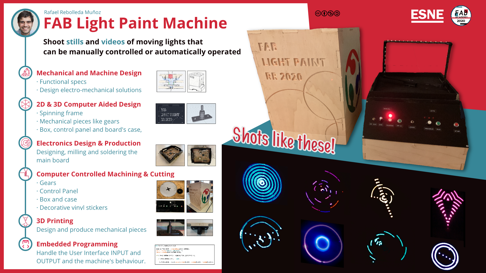

<!DOCTYPE html>
<html lang="en"></html>
<head>
  <meta charset="utf-8">
  <meta content="IE=edge" http-equiv="X-UA-Compatible">
  <meta content="width=device-width, initial-scale=1" name="viewport">
  <title> Rafael Rebolleda — Fab Academy 2020 Documentation</title>
  <!-- Google Fonts-->
  <link rel="stylesheet" href="https://fonts.googleapis.com/css?family=Catamaran&amp;display=swap">
  <link rel="stylesheet" href="../css/main.css">
</head>
<body> 
  <nav>
    <header>
      <ul>
        <li>Rafael Rebolleda</li>
        <li>ESNE (+ LEON)</li>
        <li>Madrid, Spain</li>
      </ul>
      <p class="bio">CX consultant and professor. Single, semi-remote Fab Acadeny student.</p>
    </header>
    <ol>
      <li><a class="red" href="../">About me</a></li>
      <li><a class="blue" href="../FP/">Final Project</a></li>
      <li><a class="blue" href="../DEV/">Project Development</a></li>
    </ol>
    <h1>Assignments</h1>
    <ol> 
      <li><a href="../W1/">Principles & Practices</a></li>
      <li><a href="../W2/">Computer Aided Design</a></li>
      <li><a href="../W3/">Computer Controlled Cutting</a></li>
      <li><a href="../W4/">Electronics Production</a></li>
      <li><a href="../W5/">3D Scan + Printing</a></li>
      <li><a href="../W6/">Electronics Design</a></li>
      <li><a href="../W7/">Computer Controlled Machining</a></li>
      <li><a href="../W8/">Embedded Programming</a></li>
      <li><a href="../W9/">Input Devices      </a></li>
      <li><a href="../W10/">Applications & Implications</a></li>
      <li><a href="../W11/">Output Devices</a></li>
      <li><a href="../W13/">Intellectual Property</a></li>
    </ol>
  </nav>
  <main>
    <h1>Invention, Intellectual Property and Business Models.</h1>
    <h2>Invention</h2>
    <p>I don't think I can claim invention neither of the idea or the final development... As for the former, a dark container to shoot photos is nothing new. Neither is it the idea of using changing LEDs to create light painting, even if in different formats. As for the final developments, other people have contributed ideas when bouncing thoughts and challanges. As a lone, semi-remote Fab Academy student this has been very valuable.</p>
    <h2>Intellectual Property</h2>
    <p>I've learnt so much from other people and sources, both during the Fab Academy as in life in general, that I can only think of humbly contributing back with everything on this website. </p>
    <p>I used the <a href="https://creativecommons.org/choose/">Creative Commons license tool</a> to choose a license that suits these purposes, ending up with the Attribution / Non-commercial license.</p>
    <p>All content and files are therefore free (as in both beer and speech) to use and modify in non-commercial projects, linking back so everybody can follow the breadcrum to my sources amd so on and so forth. </p>
    <p>I hope this is particularly useful for any new Fab Academy students in the future.</p>
    <h2>Project Dissemination</h2>
    <p>In addition to linking back to this website on other platforms, </p>
    <p>Being a teacher in related fields, I can use the project in different classes to demonstrate different concepts, from UI to project development to validation strategies, etc. </p>
    <p>The project itself can stay on the University for anyone to explore, and since it's completely portable, it can be taken into any class or to any get together.</p>
    <p>I would also love to share it with kids in a more informal context and show them how making things is fun and probably easier than they think :)</p>
    <h2>Future Possibilities</h2>
    <p>One thing I've thinking about is having interchangable spinning frames that produce different light patterns. It'd be great if this would be a very plug'n'play solution.</p>
    <p>More over, it'd be nice if each specific frame would come with its own set of programs.</p>
    <p>There could also be some sort of community that wrote different programs that could be loaded into the machine.</p>
    <h2>Business Models</h2>
    <p>Perhaps that could be an approach: sell the box with a basic spinning frame, and then sell independent frames that make different light patterns and come with different programs. </p>
    <p>Even different boxes with differnt sizes and shooting angles would make for interesting and valuable pieces of gear.</p>
    <h2>Slide and video</h2>
    <p>Source file: <a href="http://fabacademy.org/2020/labs/esne/students/rafael-rebolleda/presentation.png">presentation.png</a></p>
    <video src="../presentation.mp4" poster="../FP/poster.jpg" controls></video>
    <p>Source file:  <a href="http://fabacademy.org/2020/labs/esne/students/rafael-rebolleda/presentation.mp4">presentation.mp4</a></p>
    <p>The video is also up on Vimeo for easy sharing and dissemination:</p><iframe src="https://player.vimeo.com/video/446303444" width="640" height="480" frameborder="0" allow="autoplay; fullscreen" allowfullscreen></iframe>
  </main>
  <footer>
    <hr>
    <p><a rel="license" href="http://creativecommons.org/licenses/by-nc/4.0/"></a><br />This work is licensed under a <a rel="license" href="http://creativecommons.org/licenses/by-nc/4.0/">Creative Commons Attribution-NonCommercial 4.0 International License</a>.</p>
  </footer>
</body>